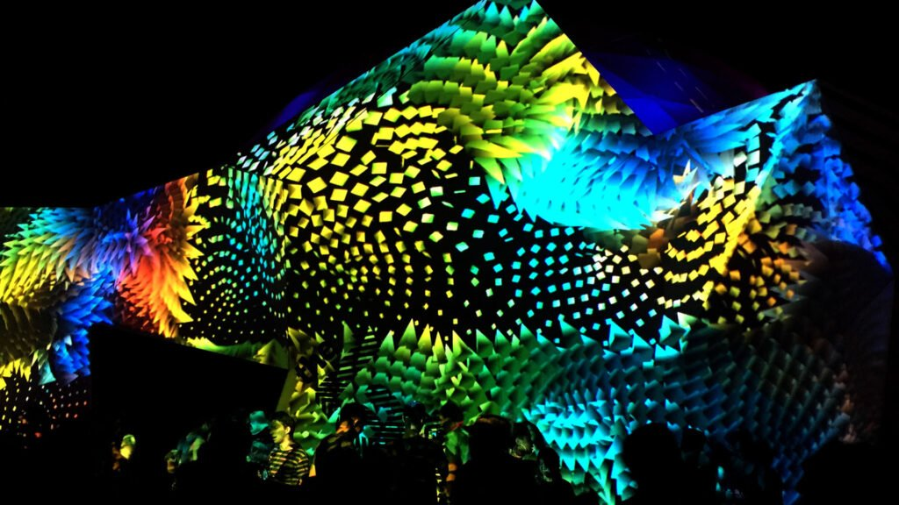
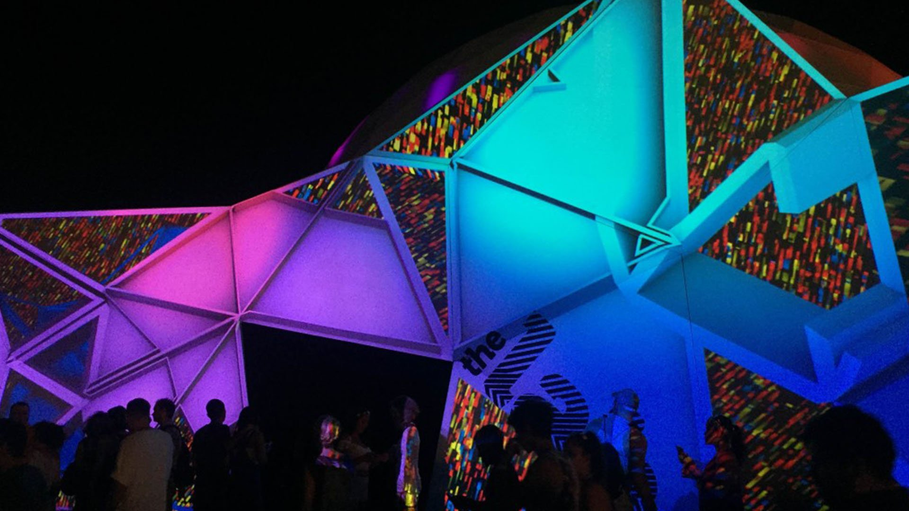
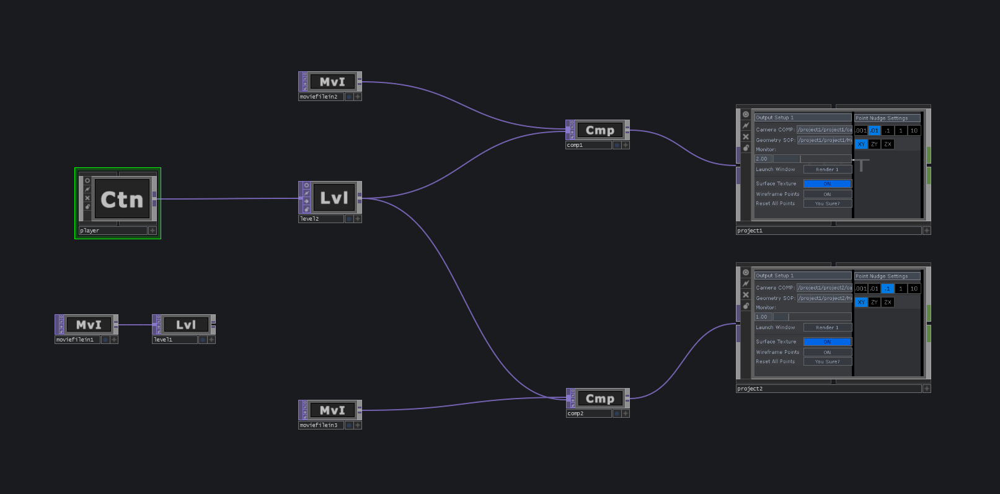

Selected Work
For the inaugural Panorama Festival in NYC, Volvox Labs used projection mapping to transform the façade of The Museum of Reinvention — also known as The Lab — into a luminous, living portal. To encapsulate and create live input from the festival itself, generative data-driven "moments" were built, which over time created a visual record of the event.
TouchDesigner was used to create a robust cueing system for playback of 4K content throughout the festival, acting as a hub for inputs and outputs while also generating the Genome and weather-informed generative elements of the mapping.
Within the Genome ecosystem, a free-flowing experience is triggered from social media data and continually collects relevant interactions. Over time and as participants interact with social media networks, the information is used to "grow" the visual flow of the Genome. Geolocation data was used to place each contribution within the living system.
In addition to Genome, weather data was pulled via API to create a forest of generative coral flow stemming from The Lab facade — its shape and motion changing in response to wind speed and temperature at the Panorama location.


Genome System
GLSL shaders powered the real-time generative elements, translating social media and environmental data into flowing visual structures. The Genome grew organically as festival-goers interacted online, creating a living data portrait of the event.

Network Architecture
TouchDesigner served as the central hub, ingesting streams from social APIs, weather services, and local sensor data — orchestrating the real-time composition across the building facade.